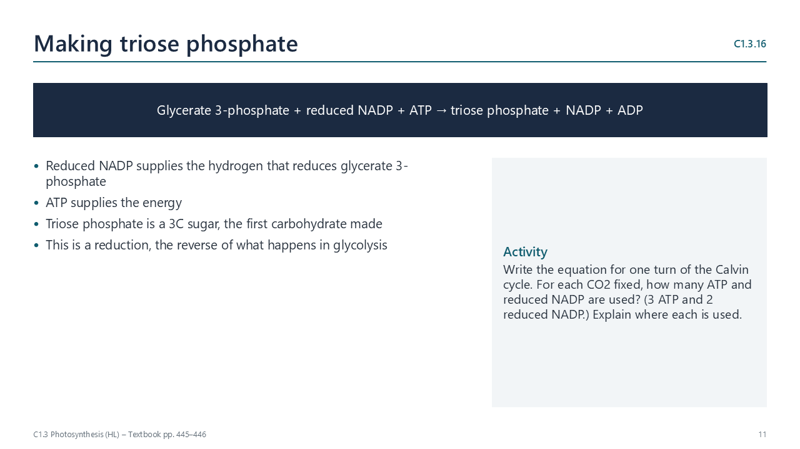

Written for this site from the class slides, with textbook page references for each statement. The chapter is on pages 439–449 of the course textbook. Image credits are on slide 30.
Light-dependent reactions
C1.3.9
Photosystems
pp. 439–440
A photosystem is an array of chlorophyll and accessory pigments held by proteins in a membrane: the thylakoids of chloroplasts, or the membranes of cyanobacteria. Pigments absorb light and pass the energy inwards to a reaction centre chlorophyll, which emits an excited electron. There are two kinds, photosystem II and photosystem I.
C1.3.10
Why pigments work as an array
p. 440
Different pigments absorb a wider range of wavelengths; many molecules catch more photons; their precise spacing funnels energy to the reaction centre; and the reaction centre passes the excited electron to an acceptor. A single pigment molecule alone would only re-emit the energy as heat or light.
C1.3.11
Photolysis and oxygen
pp. 440–441
Photosystem II replaces its lost electrons by splitting water: 2H2O → 4H+ + 4e− + O2. The protons and electrons are used; oxygen is waste. Oxygen from early photosynthesizers built up about 2.4 billion years ago, oxidized dissolved iron into banded iron deposits, formed the ozone layer and made aerobic respiration possible.
C1.3.12
Chemiosmosis in thylakoids
pp. 441–443

Excited electrons pass along a chain of carriers that pump protons from the stroma into the thylakoid space. Protons flow back through ATP synthase, making ATP. In non-cyclic photophosphorylation electrons come from photosystem II (water) and end on NADP; in cyclic photophosphorylation electrons from photosystem I return to the chain, making only ATP.
C1.3.13
Reduction of NADP
p. 443
Photosystem I emits excited electrons, two of which reduce one NADP, which also takes a proton from the stroma. Use the pairs “NADP and reduced NADP” or “NADP+ and NADPH” consistently.
C1.3.14
The thylakoid as a system
pp. 443–444
Photolysis happens on the inner side of the thylakoid membrane, releasing protons into the thylakoid space. Proton pumping is across the membrane; ATP and reduced NADP are made on the stroma side, where the Calvin cycle uses them.
The Calvin cycle
C1.3.15
Carbon fixation by rubisco
pp. 444–445
In the stroma, rubisco joins CO2 to RuBP (5C), giving two molecules of glycerate 3-phosphate. Rubisco is the most abundant enzyme on Earth; chloroplasts need a lot of it because it works slowly and poorly at low CO2 concentrations.
C1.3.16
Making triose phosphate
pp. 445–446
Glycerate 3-phosphate is reduced to triose phosphate: reduced NADP supplies the hydrogen and ATP supplies the energy.
C1.3.17
Regenerating RuBP
pp. 446–447
Five triose phosphates are converted into three RuBP, using ATP, so the cycle can continue. For each glucose made, five-sixths of all triose phosphate must return to RuBP.
C1.3.18
Making other compounds
pp. 447–448
All the carbon in a plant is fixed in the Calvin cycle. Sugars, starch and cellulose, lipids, and (with nitrogen from nitrate or ammonium) amino acids and nucleotides are made by pathways that start from triose phosphate or other cycle intermediates.
C1.3.19
Interdependence
pp. 448–449
Without light, no ATP or reduced NADP are made, so the Calvin cycle stops within seconds. Without CO2, ATP and reduced NADP are not used, NADP runs out, electrons back up along the chain and photosystem II stops working.
Videos
Select a video to play it here. Select it again to close it.
Print this guide and complete it as you work through the slides and videos. It asks for your own explanations, so close the notes while you try each section.
A printable worksheet covering all eleven statements, from quick recall to data questions and a longer answer. It has 40 marks and takes about 40 minutes, or you can do one section at a time.